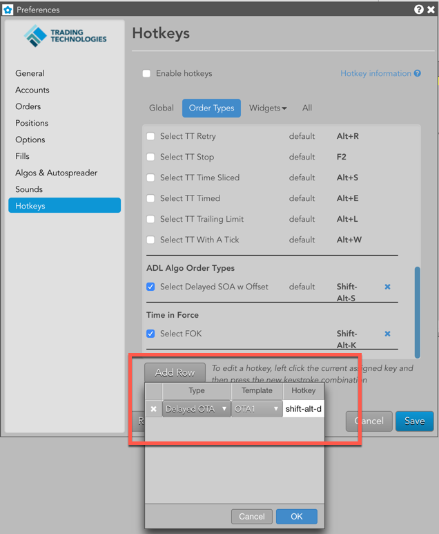

Hotkeys settings are stored at the user-level and apply across all workspaces.
Note: Commands displayed in italics and grayed out are hard-coded and cannot be customized.
This option lists global hotkeys. Click this option and check the check box next to a hotkey to enable it. Uncheck to disable.
| Preference | Description |
|---|---|
| All | Selects all hotkeys. |
| (TT) Open Existing Workspace | Opens a dialog box to select and open one of your existing workspaces. Default hotkey is Ctrl+O. Enabled by default. |
| (TT) Save Workspace | Saves the open workspace in focus. Default hotkey is Ctrl+S. Enabled by default. |
| (TT) Set Focus in Search | Places the focus in the Search field on the tool bar. Default hotkey is / (forward slash). Enabled by default. |
| (TT) Switch to window | Switches windows within a single workspace. Press Ctrl + (the window number) to switch to that window. Default hotkey is Ctrl+1-9. Enabled by default. |
This option lists hotkeys defined for order types, algos and time-in-force (TIF settings). Click this option and check the check box next to a hotkey to enable it. Uncheck to disable.
Note: These hotkeys are valid only in MD Trader and Order Ticket widgets.
| Preference | Description |
|---|---|
| All | Applies all Order Types hotkeys when either an MD Trader or Order Ticket has focus. |
| Select Market | Selects the native Market order type if supported at the exchange. Enabled by default. The default hotkey is Ctrl+M. |
| Select Limit | Selects the native Limit order type if supported at the exchange. The default hotkey is Ctrl+L. |
| Select Iceberg | Selects the native Iceberg order type if supported at the exchange. The default hotkey is Ctrl+I. |
| Select Market to Limit | Selects the native Market-to-Limit order type if supported at the exchange. The default hotkey is Ctrl+Alt+L. |
| Select Stop Market | Selects the native Stop Market order type if supported at the exchange. The default hotkey is Ctrl+Alt+M. |
| Select Stop Limit | Selects the native Stop Limit order type if supported at the exchange. The default hotkey is Ctrl+Alt+S |
| Select OCO (native) | Selects the native OCO order type if supported at the exchange. The default hotkey is Ctrl+Alt+O. |
| Select Cross | Selects the native Cross order type if supported at the exchange. The default hotkey is Ctrl+Alt+X. |
| Select Block | Selects the native Cross order type if supported at the exchange. The default hotkey is F6. |
| Select TT Bracket | Selects the synthetic TT Bracket order type. The default hotkey is [ (the open bracket key). |
| Select TT Iceberg | Selects the synthetic TT Iceberg order type. The default hotkey is Alt+I. |
| Select TT If Touched | Selects the synthetic TT If Touched order type. The default hotkey is Alt+D. |
| Select TT OCO | Selects the synthetic TT OCO order type. The default hotkey is Alt+O. |
| Select TT Retry | Selects the synthetic TT Retry order type. The default hotkey is Alt+R. |
| Select TT Stop | Selects the synthetic TT Stop order type. The default hotkey is F2. |
| Select TT Timed Sliced | Selects the synthetic TT Timed Sliced order type. The default hotkey is Alt+S. |
| Select TT Timed | Selects the synthetic TT Timed order type. The default hotkey is Alt+E. |
| Select TT Trailing Limit | Selects the synthetic TT Trailing Limit order type. The default hotkey is Alt+L. |
| Select TT With A Tick | Selects the synthetic TT With A Tick order type. The default hotkey is Alt+W. |
| Add Row |
Lets you create hotkeys to seed the following in MD Trader and Order Ticket widgets:
 |
This option lists hotkeys for specific widgets. Click this option and select a widget name to see its hotkey shortcuts. Available widgets are:
This option lists all available hotkeys. Check the check box next to a hotkey to enable it. Uncheck to disable.
When assigning hotkeys, the following restrictions apply:
This tab contains hotkey shortcuts for specific widgets in the Trade application. Check the box next to a hotkey to enable it. Uncheck to disable.
Note: Commands displayed in italics and disabled (grayed out) are hard-coded and cannot be customized.
| Action | Hotkey |
|---|---|
| Escape draw mode | Esc |
| Open contract search | Single alpha |
| Open intervals | Single numeric |
| Abandon OCO | Backspace |
Check All to enable all MD Trader hotkeys, which are applied with focus on MD Trader.
Note: The MD Trader hotkeys are disabled by default. You must enable them in Preferences to begin using them.
| Action | Hotkey |
|---|---|
| Center price ladder | Spacebar |
| Scroll price ladder up | Up arrow |
| Scroll price ladder down | Down arrow |
| Scroll price ladder up a page | PgUp |
| Scroll price ladder down a page | PgDn |
| Launch Chart | Alt+C |
| Launch Time and Sales | Alt+T |
| Show/hide order pane | Alt+P |
| Open contract search | Single alpha |
| Set order quantity | Single numeric |
| Abandon OCO | Backspace |
| Display contract information | Ctrl+Shift+X |
| Reset/Restore VAP (toggle) | Shift+R |
| Buy at the Offer (submit Buy Limit order at the current best Ask price) | F1 |
| Buy Market (submit Buy Market order) | Shift+F1 |
| Better the Bid (submit Buy Limit order 1 tick higher than current best Bid price) | F3 |
| Join the Bid (submit Buy Limit order at the current best Bid price) | F4 |
| Cancel all working orders for that instrument and account (if filtered) | Esc |
| Cancel working Buy orders | F5 |
| Cancel working Sell orders | F8 |
| Center price ladder at Bid (move price ladder to the best bid price; if no bids, move to center of grid) | Home+Space |
| Center price ladder at Sell (move price ladder to the best ask price; if no asks, move to center of grid) | End+Space |
| Combo Join the Bid and Offer | Shift+F6 |
| Better the Bid and Offer (submit Buy Limit order 1 tick above best Bid price and a Sell Limit order 1 tick below best Ask price) | F7 |
| Join the Offer (submit Sell Limit order at the current best Ask price) | F9 |
| Better the Offer (submit Sell Limit order 1 tick lower than current best Ask price) | F10 |
| Sell at the Bid (submit Sell Limit order at the current best Bid price) | F12 |
| Sell Market (submit Sell Market order) | Shift+F12 |
| Liquidate (same as left-click on Liquidate button in MD Trader order panel) | Shift+T |
| Set order quantity to current position (if net position is greater than your maximum order quantity, TT uses the maximum order quantity) | Shift+Q |
Check All to enable all Market Grid hotkeys, which are applied with focus on a row in Market Grid.
| Action | Hotkey |
|---|---|
| Display contract information | Ctrl+Shift+X |
| Launch Buy Order Ticket Join Bid | Alt+B |
| Launch Sell Order Ticket Join Offer | Alt+S |
| Launch Sell Order Ticket Hit Bid | F11 |
| Launch Buy Order Ticket Take Offer | F2 |
| Launch Order Ticket Cross Order | Ctrl+Alt+X |
Check All to enable all Option Chain hotkeys, which are applied with focus on Options Chain.
| Action | Hotkey |
|---|---|
| Center strike prices | Spacebar |
| Set spread type to Strip | Alt+S |
| Set spread type to Calendar | Alt+C |
| Set spread type to Combo | Alt+B |
| Set spread type to Combo Hedged | Alt+0 |
| Set spread type to Combo Hedged | Alt+0 |
| Set spread type to Fly | Alt+Y |
| Set spread type to custom (hold key) | Windows key |
| Submit custom spread (release key) | Windows key |
| Abandon spread | Esc |
| Center strike prices | Space |
Check All to enable all Order Book hotkeys, which are applied with focus on the Order Book.
| Action | Hotkey |
|---|---|
| Escape confirmation mode | Esc |
| Cancel selected order(s). | Delete |
Check All to enable all Order Ticket hotkeys, which are applied with focus on the Order Ticket.
| Action | Hotkey |
|---|---|
| Escape confirmation mode | Esc |
| Submit Buy Order | Ctrl + F1 |
| Submit Sell Order | Ctrl + F12 |
| Open Profiles dropdown | Ctrl + P |
| Open Account dropdown | Ctrl + A |
| Set focus on Quantity | Ctrl + Home |
| Set focus on Price | Ctrl + End |
| Set focus on TextTT | Alt + T |
You can modify an existing hotkey by reassigning the command to a custom keystroke.
To modify a hotkey, click the currently assigned hotkey and press the new keystroke combination.

Note: You'll receive an error message if your custom hotkey is already assigned to a different command, or if the hotkey is restricted within TT. If there's a conflict, you will have the option to keep the custom hotkey assignment.